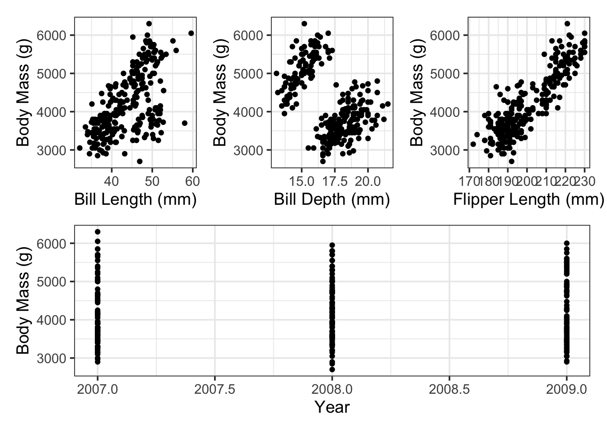

set.seed(123)
penguin_splits <- initial_split(penguins)
penguins_train <- training(penguin_splits)
penguins_test <- testing(penguin_splits)Multiple Linear Regression
Objectives
This notebook gives an overview of Multiple Linear Regression, where we’ll use more than one feature/predictor to predict a numerical response variable. After reviewing this notebook, you should be able to:
- Fit a multiple linear regression model to training data using
tidymodels - Assess that model’s performance on the training data by looking at global model utility metrics, and by analyzing metrics for the model term.
- Interpret a multiple linear regression model with statistically significant predictors.
- Use a multiple linear regression model to make predictions on new data.
- Evaluate model performance on the test set.
Simple Versus Multiple Linear Regression
In the previous notebook, we learned that a simple linear regression model whose response variable is \(y\) and whose sole predictor is \(x\) is of the form \[y = \beta_0 + \beta_1\cdot x +\varepsilon ~~~~\text{or}~~~~\mathbb{E}\left[y\right] = \beta_0 + \beta_1\cdot x\]
Multiple linear regression models are quite similar, the difference being that these multiple linear regression models contain multiple predictor variables: \(x_1,~x_2,~...~,x_k\). That is, these models take the form \[y = \beta_0 + \beta_1\cdot x_1 + \beta_2\cdot x_2 + \cdots +\beta_k x_k +\varepsilon\] \[~~~~\text{--or--}~~~~\] \[\mathbb{E}\left[y\right] = \beta_0 + \beta_1\cdot x_1 + \beta_2\cdot x_2 + \cdots +\beta_k x_k\]
In a simple linear regression model, we could interpret the coefficient on the term containing the predictor variable as a slope. That is, the \(\beta\) coefficient is the expected rate of change in the response variable per unit change in the predictor variable. For example, a penguin whose bill is \(1\)mm longer than average is expected to have about \(88.58\)g more mass than the average penguin or for each additional millimeter of bill length, we expect a penguin to have about \(88.58\)g more mass, on average.
For multiple linear regression models, we have similar interpretations as long as the model terms are independent of one another (we’ll encounter scenarios where they are not when we look at higher-order terms later in our course). That is, the interpretation of \(\beta_i\), the coefficient on \(x_i\) in our model is the expected change in the response variable associated with a unit change in \(x_i\), while all other predictors are held constant.
Model Coefficients as Slopes
For simple and multiple linear regression models where each model term contains a single numerical predictor, we can interpret the corresponding \(\beta\)-coefficient as a slope, holding all other predictors constant.
That is, for the multiple linear regression model
\[\mathbb{E}\left[y\right] = \beta_0 + \beta_1 x_1 + \beta_2 x_2 + \cdots + \beta_k x_k\] holding all other predictors constant, we expect a unit increase in \(x_i\) to be associated with an increase of about \(\beta_i\) in the expected value of \(y\) as long as \(x_1\) through \(x_k\) are independent, numerical predictors.
Let’s move forward and see how to build, assess, and interpret a multiple linear regression model. For simplicity and continuity, we’ll continue working with the palmerpenguins data and try to predict body_mass_g using the other numerical features in the data set.
Training and Test Data
We’ll start by splitting our data into training and test sets, as usual.
As a reminder, here’s the first few rows of our training data.
penguins_train %>%
head() %>%
kable() %>%
kable_styling()| species | island | bill_length_mm | bill_depth_mm | flipper_length_mm | body_mass_g | sex | year |
|---|---|---|---|---|---|---|---|
| Gentoo | Biscoe | 44.5 | 14.3 | 216 | 4100 | NA | 2007 |
| Adelie | Torgersen | 38.6 | 21.2 | 191 | 3800 | male | 2007 |
| Gentoo | Biscoe | 45.3 | 13.7 | 210 | 4300 | female | 2008 |
| Chinstrap | Dream | 52.8 | 20.0 | 205 | 4550 | male | 2008 |
| Adelie | Torgersen | 37.3 | 20.5 | 199 | 3775 | male | 2009 |
| Chinstrap | Dream | 43.2 | 16.6 | 187 | 2900 | female | 2007 |
EDA with Numerical Features
Let’s explore whether the numerical features in our data frame are visually associated with penguin body mass.
p1 <- penguins_train %>%
ggplot() +
geom_point(aes(x = bill_length_mm, y = body_mass_g)) +
labs(x = "Bill Length (mm)",
y = "Body Mass (g)")
p2 <- penguins_train %>%
ggplot() +
geom_point(aes(x = bill_depth_mm, y = body_mass_g)) +
labs(x = "Bill Depth (mm)",
y = "Body Mass (g)")
p3 <- penguins_train %>%
ggplot() +
geom_point(aes(x = flipper_length_mm, y = body_mass_g)) +
labs(x = "Flipper Length (mm)",
y = "Body Mass (g)")
p4 <- penguins_train %>%
ggplot() +
geom_point(aes(x = year, y = body_mass_g)) +
labs(x = "Year",
y = "Body Mass (g)")
(p1 + p2 + p3)/p4Warning: Removed 2 rows containing missing values or values outside the scale range
(`geom_point()`).
Removed 2 rows containing missing values or values outside the scale range
(`geom_point()`).
Removed 2 rows containing missing values or values outside the scale range
(`geom_point()`).
Removed 2 rows containing missing values or values outside the scale range
(`geom_point()`).
It looks like there are positive associations between penguin body mass and the bill measurements as well as the flipper measurement. The plot with the year variable is difficult to read (which we’ll return to later) – for now, we’ll include the year variable in our model as another numerical predictor.
Building a Multiple Linear Regression Model
The strategy for building a multiple linear regression model in {tidymodels} is exactly the same as the strategy for building a simple linear regression.
- Create a model specification using
linear_reg()and set its fitting engine to"lm". - Create a model recipe by passing the model formula and data to the
recipe()function. - Package the model and recipe together into a
workflow(). - Fit the workflow by passing it to
fit()with the training data.
Let’s see that in action.
mass_multi_spec <- linear_reg() %>%
set_engine("lm")
mass_multi_rec <- recipe(body_mass_g ~ bill_length_mm + bill_depth_mm + flipper_length_mm + year, data = penguins_train)
mass_multi_wf <- workflow() %>%
add_model(mass_multi_spec) %>%
add_recipe(mass_multi_rec)
mass_multi_fit <- mass_multi_wf %>%
fit(penguins_train)There it is – we have our model. Let’s check it out.
Assessing our Fitted Model
As a reminder, we’ll run several levels of assessment.
A global model assessment (using
glance()), including- the global test for model utility (looking at the
p.value) - an assessment of the proportion of variation in the response variable explained by our model (looking at the
adj.r.squared) - understanding the expected “accuracy” of our model (looking at the
sigmavalue, which measures the residual standard error, and constructing a naive confidence interval)
- the global test for model utility (looking at the
Individual model-term analysis (using
fitted_model %>% extract_fit_engine() %>% tidy()), including- assessing the statistical significance of individual model terms (looking at the
p.values) - identifying and interpreting estimated model coefficients (looking at the
estimate) - identifying and interpreting the uncertainty in these coefficient estimates (looking at the
std.errorto construct confidence intervals)
- assessing the statistical significance of individual model terms (looking at the
An unbiased assessment of model performance
Since the model knew the true body masses of the penguins that it is attempting to predict, it had an unfair advantage in predicting those values. Think of it this way, if you have a practice exam with an answer key (which you get to look at), then just because you do well on the practice exam doesn’t mean you are well-prepared for the real exam – the same holds true for the model.
We’ll use our model to make predictions for the body mass of penguins in our test data.
Once we have those questions, we’ll compute global model performance metrics like RMSE and R-Squared.
- Because the model didn’t know that these penguins existed, the model has no advantage in predicting their body mass. Assessing the model performance on these test penguins leaves the assessment unbiased.
Global Model Assessment
Let’s use glance() to get some very high-level metrics about our overall model’s estimated performance.
mass_multi_fit %>%
glance() %>%
kable() %>%
kable_styling(bootstrap_options = c("hover", "striped"))| r.squared | adj.r.squared | sigma | statistic | p.value | df | logLik | AIC | BIC | deviance | df.residual | nobs |
|---|---|---|---|---|---|---|---|---|---|---|---|
| 0.7808404 | 0.7773478 | 387.1782 | 223.571 | 0 | 4 | -1886.198 | 3784.396 | 3805.667 | 37626655 | 251 | 256 |
First, we can conduct the global test for model utility. Since this is the first time we’ve really done such a test, a reminder of the hypotheses appears below. \[\begin{array}{lcl} H_0 & : & \beta_1 = \beta_2 = \beta_3 = \beta_4 = 0\\ H_a & : & \text{At least one of the coefficients is non-zero}\end{array}\]
The p.value for this test is extremely small, so we have evidence to suggest that at least one of the model’s predictor terms has a non-zero coefficient. That’s good news – there is atleast some value to our model!
We can see from the adj.r.squared value that approximately 77.73% of the variation in penguin body mass is explained by this model.
Finally, we can assess the residual standard error (sigma) for the model. This value helps us estimate how accurate we should expect our predictions to be. At approximately 95% confidence, we can expect our predictions to be accurate to within about \(\pm\) 774.36 grams. As a reminder, however, this estimate is biased and may be too optimistic about the errors our model will make in the future. We should recalculate this metric (and the adjusted R squared metric) using unseen data, such as the test data.
Assessment of Individual Model Terms
We’ll pipe our fitted model to extract_fit_engine() and tidy() to obtain the data frame of model terms and corresponding metrics.
mass_multi_fit %>%
extract_fit_engine() %>%
tidy() %>%
kable() %>%
kable_styling()| term | estimate | std.error | statistic | p.value |
|---|---|---|---|---|
| (Intercept) | 232658.774875 | 60591.365347 | 3.8398008 | 0.0001560 |
| bill_length_mm | 1.530334 | 5.984567 | 0.2557134 | 0.7983815 |
| bill_depth_mm | 28.587515 | 15.997312 | 1.7870199 | 0.0751409 |
| flipper_length_mm | 52.753150 | 2.783871 | 18.9495697 | 0.0000000 |
| year | -119.323909 | 30.224297 | -3.9479466 | 0.0001024 |
The first thing we should do is look at the p.values associated with the individual model terms. At this stage, if any model terms are not statistically significant we should remove them one-by-one. We’ll do so by removing the predictor with the highest p.value first.
Before we begin removing predictors from the model, perhaps this process seems a bit mysterious. It is worth looking at a visual of the estimated model coefficients and their plausible ranges.
mass_multi_fit %>%
extract_fit_engine() %>%
tidy() %>%
filter(term != "(Intercept)") %>%
ggplot() +
geom_errorbarh(aes(y = term,
xmin = estimate - (2*std.error),
xmax = estimate + (2*std.error),
color = term),
show.legend = FALSE) +
geom_point(mapping = aes(x = estimate, y = term, color = term),
show.legend = FALSE) +
geom_vline(xintercept = 0, linetype = "dashed") +
labs(x = "Estimated Model Coefficient",
y = "")We can see that the plausible ranges for coefficients on bill_length_mm and bill_depth_mm overlap with \(0\). If these coefficients were \(0\), then the corresponding model terms would drop out of the model. This is what statistical insignificance means.
Let’s refit the model without the bill_length_mm predictor and see whether bill_length_mm should still be removed.
mass_multi_spec <- linear_reg() %>%
set_engine("lm")
mass_multi_rec <- recipe(body_mass_g ~ bill_length_mm + flipper_length_mm + year, data = penguins_train)
mass_multi_wf <- workflow() %>%
add_model(mass_multi_spec) %>%
add_recipe(mass_multi_rec)
mass_multi_fit <- mass_multi_wf %>%
fit(penguins_train)
mass_multi_fit %>%
extract_fit_engine() %>%
tidy() %>%
kable() %>%
kable_styling()| term | estimate | std.error | statistic | p.value |
|---|---|---|---|---|
| (Intercept) | 225991.977989 | 60739.032170 | 3.7207043 | 0.0002450 |
| bill_length_mm | 3.794827 | 5.874269 | 0.6460083 | 0.5188618 |
| flipper_length_mm | 49.895057 | 2.288486 | 21.8026532 | 0.0000000 |
| year | -115.523634 | 30.280317 | -3.8151395 | 0.0001713 |
Bill length in millimeters is still just above the threshold for statistical significance. We’ll drop it from our model and refit.
mass_multi_spec <- linear_reg() %>%
set_engine("lm")
mass_multi_rec <- recipe(body_mass_g ~ flipper_length_mm + year, data = penguins_train)
mass_multi_wf <- workflow() %>%
add_model(mass_multi_spec) %>%
add_recipe(mass_multi_rec)
mass_multi_fit <- mass_multi_wf %>%
fit(penguins_train)
coef_df <- mass_multi_fit %>%
extract_fit_engine() %>%
tidy()
coef_df %>%
kable() %>%
kable_styling()| term | estimate | std.error | statistic | p.value |
|---|---|---|---|---|
| (Intercept) | 227916.26652 | 60596.048460 | 3.76124 | 0.0002101 |
| flipper_length_mm | 50.87429 | 1.712514 | 29.70736 | 0.0000000 |
| year | -116.49701 | 30.207960 | -3.85650 | 0.0001460 |
Okay, both of the remaining predictors, flipper_length_mm and year are statistically significant. This gives us our “final” model form of \(\mathbb{E}\left[\text{body\_mass\_g}\right] = \beta_0 + \beta_1 \cdot\text{flipper\_length\_mm} + \beta_2\cdot\text{year}\), where the estimated model has \(\beta_0\approx\) 227916.3, \(\beta_1\approx\) 50.87, and \(\beta_2\approx\) -116.5.
At this point, we have a model that we can make predictions and interpretations with. In terms of the model coefficients,
- We expect penguins with longer flippers to have greater mass. On average, with year being held constant, we expect a unit increase in flipper length to be associated with approximately \(50.87\)g additional mass.
- We expect penguins to have lower body mass with each passing year. On average, holding the flipper length constant, similar penguins from one year to the next are expected to have approximately \(116.5\)g less body mass.
Interpreting Marginal Effects with {marginaleffects}
So far, we have been able to interpret each model coefficient as a slope. This is relatively straight forward. However, as we explore more complex models – particularly those with mixed effects and higher order terms – the interpretation of the impact of a predictor on the response is more difficult to extract. This is particularly true for those without a calculus background.
Fortunately, the {marginaleffects} package can help us. We’ll introduce it now because this is a simple case and this early exposure will make it easier for us to use the functionality later.
library(marginaleffects)
counterfactual_flipper_df <- tibble(flipper_length_mm = seq(170, 235, length.out = 500),
year = 2019)
mfx <- mass_multi_fit %>%
extract_fit_engine() %>%
slopes(newdata = counterfactual_flipper_df,
variables = "flipper_length_mm",
conf_level = 0.95) %>%
tibble()
mfx %>%
select(term, flipper_length_mm, estimate, conf.low, conf.high, std.error) %>%
head(n = 10) %>%
kable() %>%
kable_styling()| term | flipper_length_mm | estimate | conf.low | conf.high | std.error |
|---|---|---|---|---|---|
| flipper_length_mm | 170.0000 | 50.87429 | 47.51951 | 54.22906 | 1.71165 |
| flipper_length_mm | 170.1303 | 50.87429 | 47.51951 | 54.22906 | 1.71165 |
| flipper_length_mm | 170.2605 | 50.87429 | 47.51951 | 54.22906 | 1.71165 |
| flipper_length_mm | 170.3908 | 50.87429 | 47.51951 | 54.22906 | 1.71165 |
| flipper_length_mm | 170.5210 | 50.87429 | 47.51951 | 54.22906 | 1.71165 |
| flipper_length_mm | 170.6513 | 50.87429 | 47.51951 | 54.22906 | 1.71165 |
| flipper_length_mm | 170.7816 | 50.87429 | 47.51951 | 54.22906 | 1.71165 |
| flipper_length_mm | 170.9118 | 50.87429 | 47.51951 | 54.22906 | 1.71165 |
| flipper_length_mm | 171.0421 | 50.87429 | 47.51951 | 54.22906 | 1.71165 |
| flipper_length_mm | 171.1723 | 50.87429 | 47.51951 | 54.22906 | 1.71165 |
mfx %>%
select(flipper_length_mm, estimate, conf.low, conf.high) %>%
ggplot() +
geom_line(aes(x = flipper_length_mm, y = estimate), color = "purple", lty = "dashed", lwd = 1.5) +
geom_ribbon(aes(x = flipper_length_mm, ymin = conf.low, ymax = conf.high),
fill = "grey", alpha = 0.5) +
labs(x = "Flipper Length (mm)",
y = "Marginal Effect",
title = "Marginal Effects of Unit Increase in Flipper Length")Reading off of the graph, we can see that the estimated marginal effect of an increase of 1mm in flipper length is associated with an estimated increase of just under 50g, and that this expected increase is independent of the current flipper length. Furthermore, we can see that we are 95% confident that the marginal effect of a unit increase in flipper length on expected body mass is somewhere between 47.5g/mm and 54.25g/mm. These estimates agree with the values we calculated from the tabular output of the regression model above.
Returning to Global Performance Metrics
Since our model form has changed, we need to reassess our global model metrics. They will have all shifted.
mass_multi_fit %>%
glance() %>%
kable() %>%
kable_styling(bootstrap_options = c("hover", "striped"))| r.squared | adj.r.squared | sigma | statistic | p.value | df | logLik | AIC | BIC | deviance | df.residual | nobs |
|---|---|---|---|---|---|---|---|---|---|---|---|
| 0.7776845 | 0.775927 | 388.4116 | 442.5111 | 0 | 2 | -1888.028 | 3784.056 | 3798.237 | 38168479 | 253 | 256 |
It is no surprise that our model as a whole still has a significant p.value. We removed those predictors which we we were not confident had non-zero coefficients.
Our adj.r.squared value has changed slightly, and our final model explains approximately 77.59% of the variability in penguin body mass.
Finally, our residual standard error has also changed slightly. We now expect our predictions to be accurate to within about \(\pm\) 776.82g.
Assessing Model Performance on Unseen (Test) Observations
We recognize that the adj.r.squared and residual standard error estimates from the global model metrics may be too optimistic. Again, this is because these measures are associated with how well our model predicts the training observations, where the model knew the answers. We can reconstruct these metrics using the test data to obtain unbiased estimates of model performance. We’ll do the following:
- Create a set of metrics (using
metric_set()) that we wish to use to evaluate our model. - Augment our test data set with a column of predictions of body mass coming from our model.
- Evaluate our metrics by comparing the true responses (
body_mass_g) to the predicted responses (.pred)
my_metrics <- metric_set(rmse, rsq)
mass_multi_fit %>%
augment(penguins_test) %>%
select(body_mass_g, .pred) %>%
my_metrics(body_mass_g, .pred) %>%
kable() %>%
kable_styling(bootstrap_options = c("hover", "striped"))| .metric | .estimator | .estimate |
|---|---|---|
| rmse | standard | 376.6980462 |
| rsq | standard | 0.7450228 |
We see that the R Squared value is slightly lower on the test data than it was on the training data. As a reminder, a lower R Squared value indicates that a lower proportion of the variation in the response is explained by our model – that is, the model performs slightly worse on the test data according to the R Squared metric.
Note that root mean squared error is comparable to the residual standard error (sigma), as it measures the average prediction error. Similarly, we see a slightly lower rmse on the test data than we saw on the training data. As a reminder, lower rmse indicates better predictive performance, so this model performs slightly better on the test data according to the rmse metric. More on this later in our course as well.
A Note on Comparing Model Metrics: The residual standard error (sigma) from the glance() function and the rmse metric we’ve computed just now utilize slightly different formulas, so they aren’t directly comparable (particularly in cases with very small data). One thing we can do is to use glance() for the global test of model utility only (interpreting that p.value), and then we can compute rsq and rmse for both the training and test sets and compare those to one another.
(mass_multi_fit %>%
augment(penguins_test) %>%
select(body_mass_g, .pred) %>%
my_metrics(body_mass_g, .pred) %>%
mutate(type = "test")) %>%
bind_rows(
(mass_multi_fit %>%
augment(penguins_train) %>%
select(body_mass_g, .pred) %>%
my_metrics(body_mass_g, .pred) %>%
mutate(type = "train"))
) %>%
pivot_wider(id_cols = type,
names_from = .metric,
values_from = .estimate) %>%
kable() %>%
kable_styling(bootstrap_options = c("hover", "striped"))| type | rmse | rsq |
|---|---|---|
| test | 376.698 | 0.7450228 |
| train | 386.129 | 0.7776845 |
Summary
Okay, we’ve covered quite a bit in this notebook! Here’s a recap of the most important ideas.
Multiple linear regressions are extensions of simple linear regression models, in which we have multiple model terms containing predictor variables.
A multiple linear regression model takes the form \(\mathbb{E}\left[y\right] = \beta_0 + \beta_1\cdot x_1 + \beta_2\cdot x_2 + \cdots + \beta_k x_k\), where \(y\) is the response variable and \(x_1,~x_2,~\cdots,~x_k\) are predictors.
The \(\beta_0\) “coefficient” is the intercept for the model – the expected response if all predictor variables take on the value \(0\).
Each \(\beta_i\) for \(i > 0\) can be interpreted as a slope coefficient for the corresponding model term, when all other predictors are held constant.
We run multiple levels of assessment on our models.
We use
fitted_model %>% glance()to obtain thep.valueassociated with a global test for model utility. That is, we test the hypotheses \[\begin{array}{lcl} H_0 & : & \beta_1 = \beta_2 = \cdots = \beta_k = 0\\ H_a & : & \text{At least one of the model coefficients is non-zero}\end{array}\]We use
fitted_model %>% extract_fit_engine() %>% tidy()to obtain estimated model coefficients and diagnostics.- In general, we look to the
p.valuecolumn to determine whether model terms are statistically significant or not. - In the case where model terms are not statistically significant, we remove one predictor at a time (according to the highest
p.value), and refit the model. We continue in this fashion until all remaining terms are statistically significant. - At this point, we have an estimated model and we can construct it using the estimated \(\beta\) coefficients found in the
estimatecolumn. - The corresponding values in the
std.errorcolumn help us build confidence intervals for the \(\beta\) coefficients, giving us greater understanding of the uncertainty in our model.
- In general, we look to the
Finally, we can compute performance metrics for our model on both the training and test data sets.
- In general, we should expect our models to perform better on training data (since the model has access to the true responses during the fitting process), however this is not always the case.
- Comparing these training and test metrics is a great way to gain insight into the current fit of our model and how we might be able to improve it. (More on this idea later in our course)